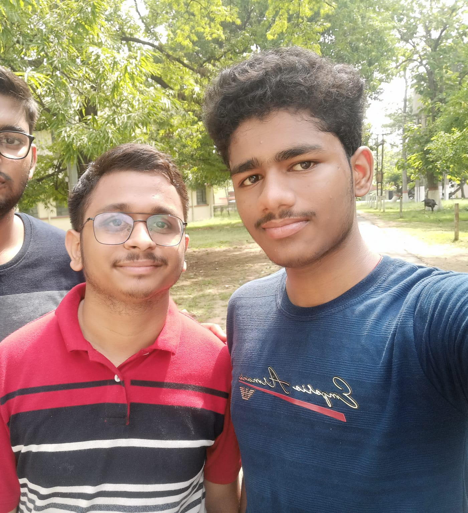
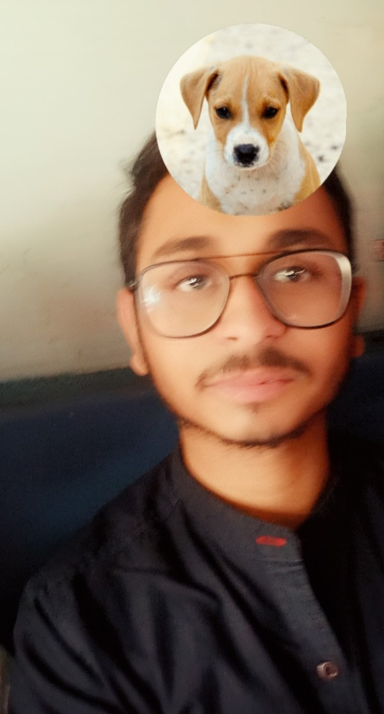
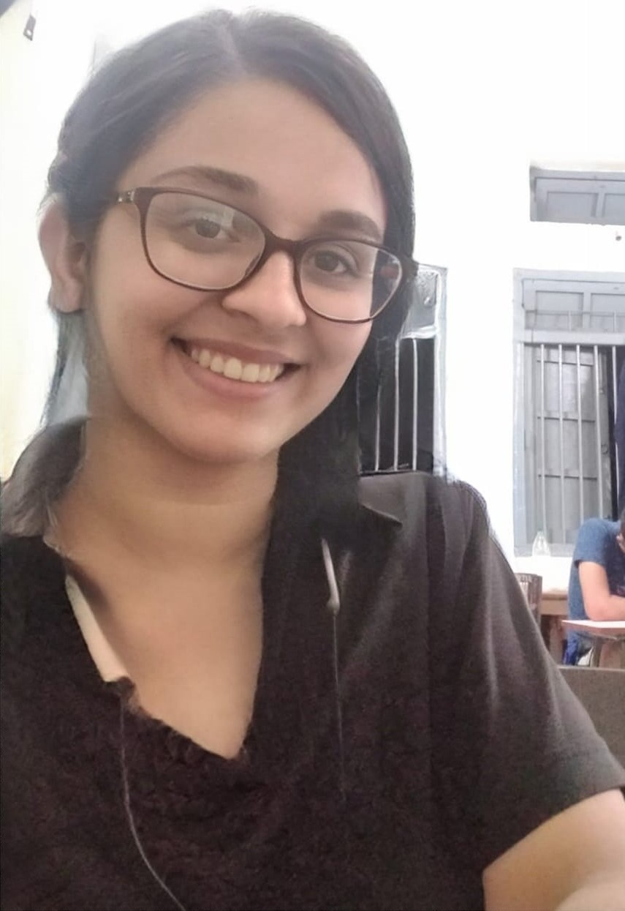
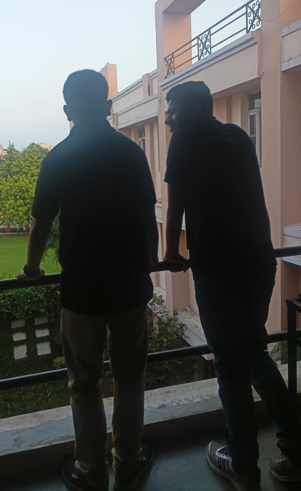

Humlog ko mille hue almost ek saal ho gaya h. Aaj bhi yaad h hum tumko pehla message whatsapp pe kiye the, jisme tumko bhaiya bol rahe the 😂😂. Tera pichla birthday online bita tha. Iss baar offline me h, ummed kar rahe h ki ache se maare honge 😂. Tumko hi sabse jyada problem tha birthday boom se. Isliye sabse bada birthday boom tumko hi milna chahiye 😈😈 .

Kisi ki special farmaish pe ye photo lag raha h, batane ki jarurat nai h kiski. To socha ki sabd bhi unke hi hone chahiye. "Toh aaj is kutte ka janamdin aa hi gya... Waiting for it qki tumne bol diya tha ki dosa party milega and u know na ki meko dosa kitna pasand h.... is bdy me dosa se kaam chala lenge but next year i want a big party in a big restro remember it. Waise toh tum mera bahut majak udate ho aur pareshan toh usse v jada krte ho but you are the first person jaha tk meko yaad h jisse boys se aacha dosti hua h and you were the first jo mere bhai banne ko agree kr gye thei bina drama k.... So enjoy ur bdy and aache se padho internship lo job kro BT banne ka man h toh wo v ban jana...waise itna success ka baat isliye kr rhe h taki meko party mil ske and no other reason... and hamesa apna sara baat merese jaroor share krna don't know ki solution de payenge ya ni but yes tmko aacha feel krwa payenge and majak v uda payengee...Wishing you a very happy Birthday my Brother."

Tumhari iss tasweer ke to puri class diwani h. Sach bol rahe h agar tu larki hota na to abhi tak 5-6 baar propose kar chuka hota 😁😁. Tujse bhi reject ho jata vo alag baat h, par karta jarur 🤣🤣. Sachme iss photo se to Angel Priya ke 10 account chal sakte h. Chal tere iss photo se shadi.com pe ek profile banate h aur dekhte h kitna rishta aata h, humko nai lagta 100 se kam aayega.

Ek tu hi h jisko meri saari baat pata h. Aise to I m like an open book to bahut logo ko meri bahut sari baat pata h. Pr tujko saari baat pata h, vo bhi jo bakiyoon ko nai pata h. Aksaar tujse advice lene aata hu, kyuki sabse matured advise tu hi deta h. Vo alag baat h vo advise rarely follow karta hu mai 🤣🤣, par leta tujhi se hu.